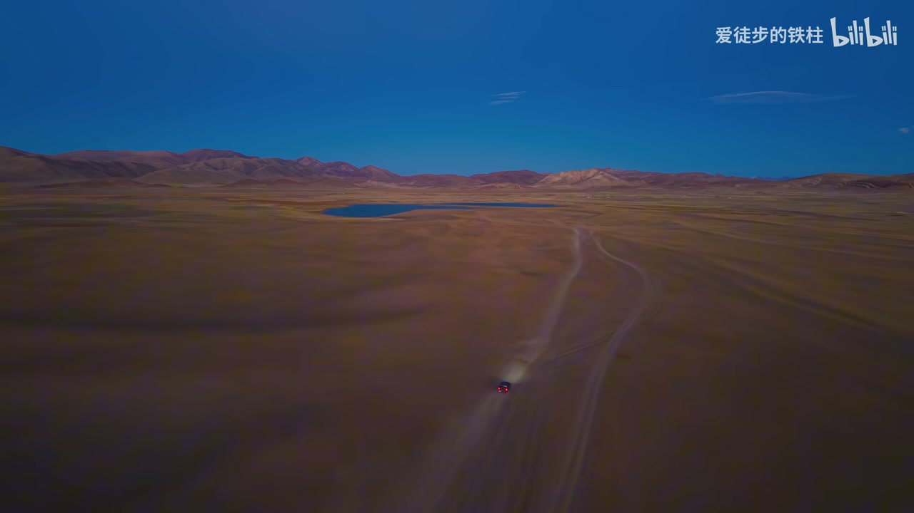
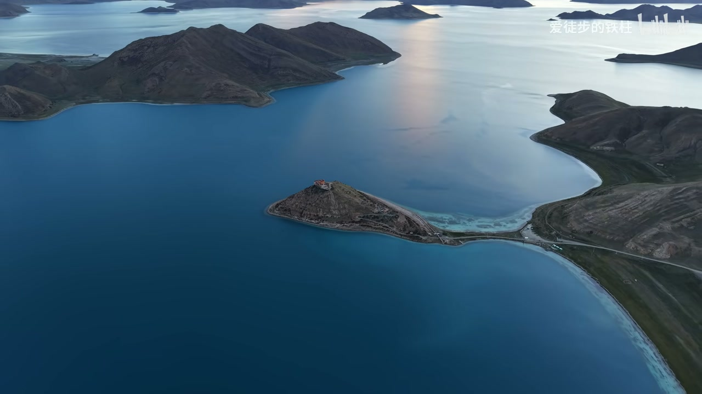
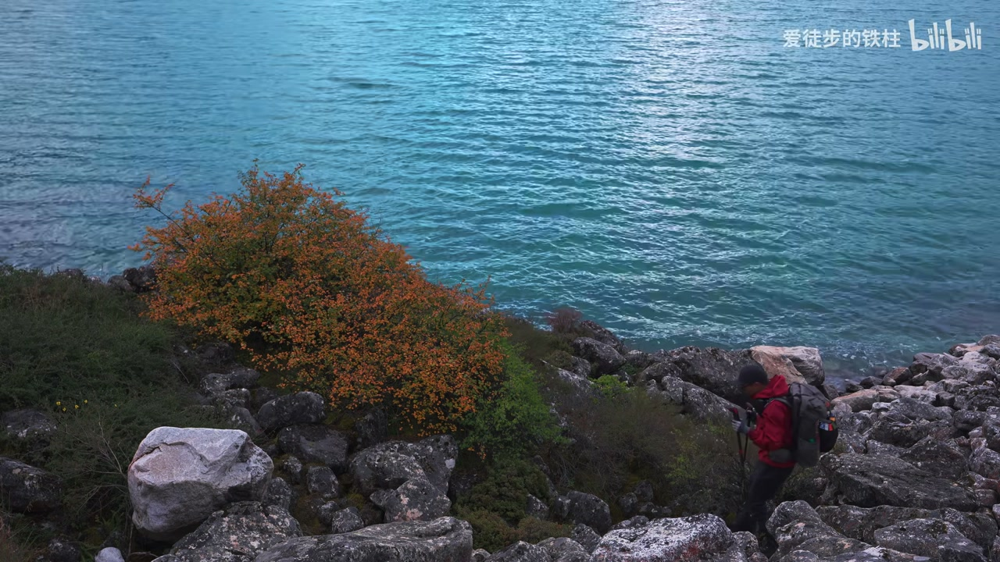
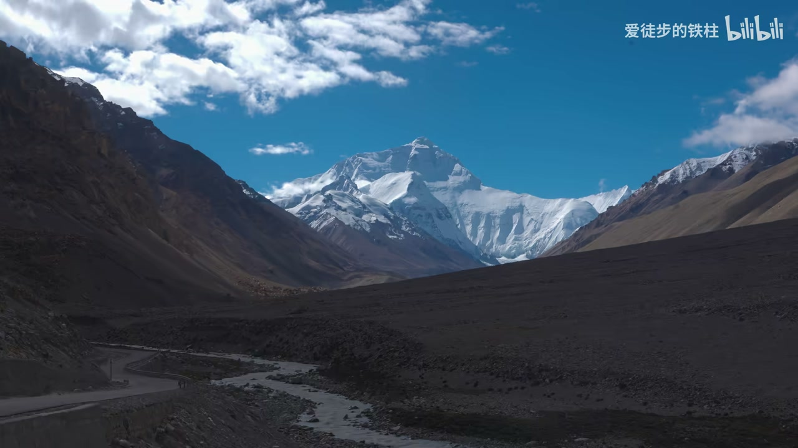
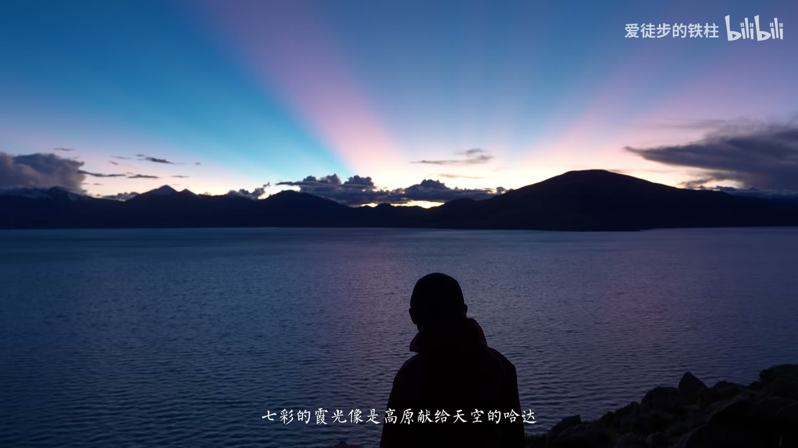
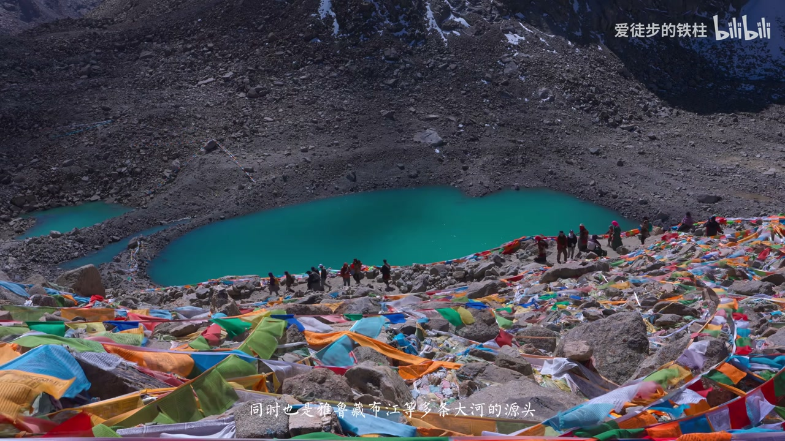
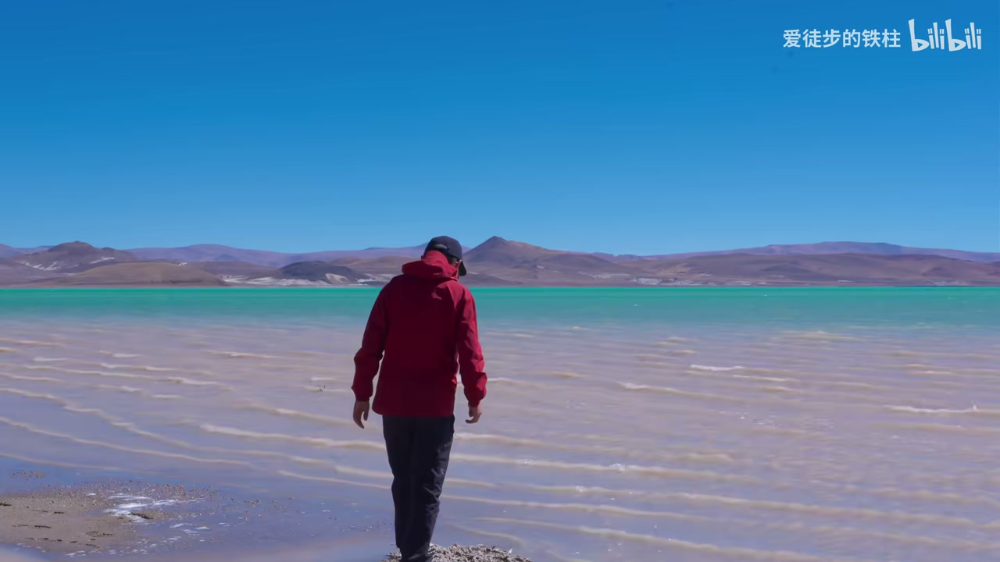
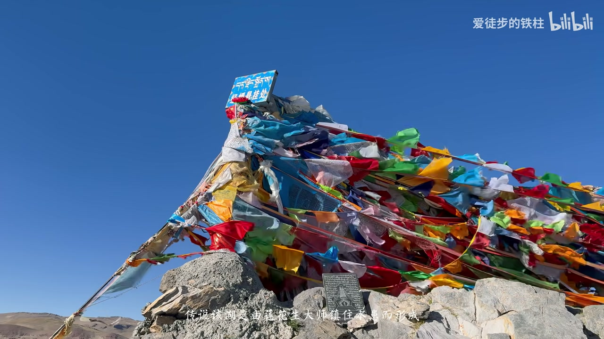
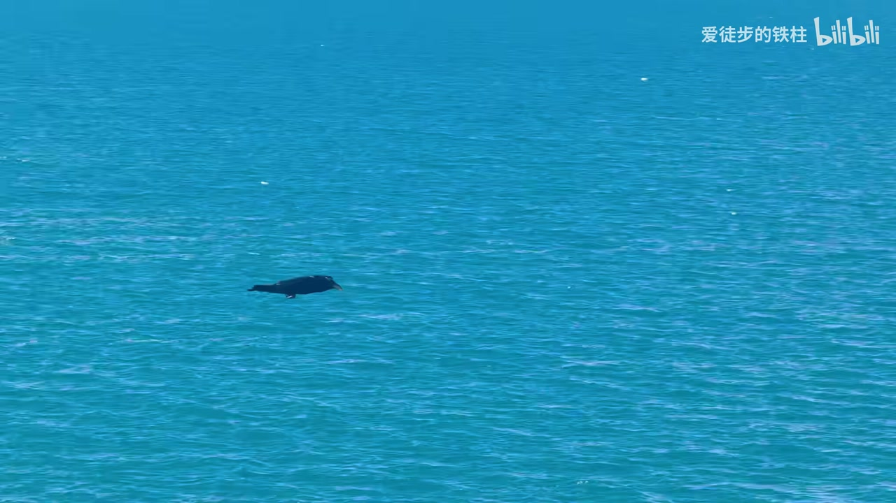
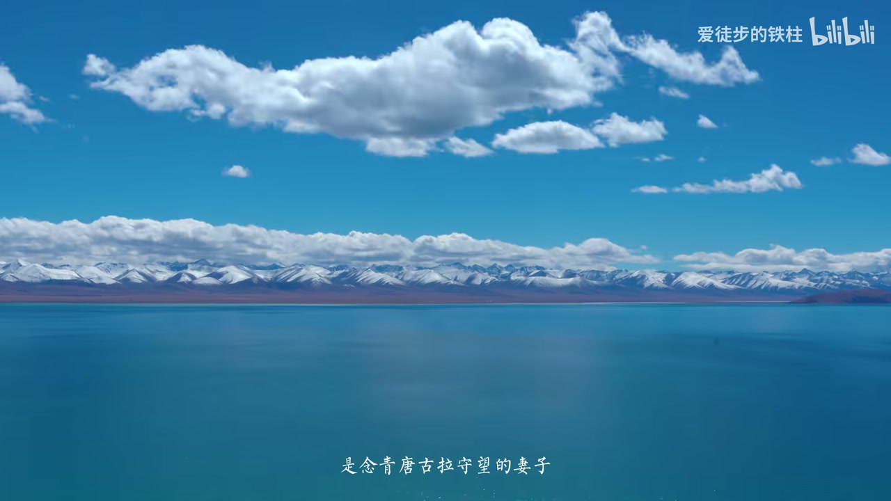

内容要点
「爱徒步的铁柱」用航拍与车程串起阿里大环线：从拉萨环羊卓雍措到「一僧一寺」的日托寺，经库拉岗日冰川、加乌拉山口远眺五座八千米峰与佩枯错晚霞，再沿219进入岗仁波齐核心，北上班公错、错那、窝巴错与查日南木错，过色林错鸟岛，最终在纳木错收束。语气偏诗意纪实，地名与峰名以画面字幕为准并校正 ASR。
知识结构
第三极意象；羊卓雍措＋日托寺孤独修行。
七千米雪峰群、冰川冰湖与徒步环湖。
加乌拉远眺五座八千米峰；佩枯错晚霞。
219荒原藏野驴；岗仁波齐与纳木那尼。
班公错鸟岛、错那分层、窝巴错森色。
查日南木错分层；205日落大道。
大则错河网；色林错与错鄂鸟岛。
离天空最近的圣湖；热爱生活收束。
阿里大环线不是打卡清单，而是一路向西把圣湖、雪峰与荒原连成可走的第三极叙事；终点纳木错之后，口号落回「接受平凡自我，但不放弃理想」。
00:00-03:20世界屋脊的屋脊：羊湖与日托寺
片头把阿里称作「世界屋脊的屋脊」「地球的第三极」：平均海拔约五千米，群山相聚、江河发源，高原褪去繁杂只剩本质。航拍里一辆车碾过荒原土路，远处嵌着深蓝小湖——旅程的调性就此定下。
正式路书从三大圣湖之一的羊卓雍措起：自拉萨环羊湖，最终抵达被称为「世界上最孤独的寺庙」的日托寺——藏传佛教萨迦派，仅一名僧人修行，「一湖一岛、一僧一寺」。湖水与古寺遥遥相望，高原的安静与虔诚被强调出来。02:52 字幕可核验。


03:20-05:20库拉岗日：七千米雪峰与冰川湖
告别羊湖来到库拉岗日脚下：喜马拉雅中段主脊，多座七千米雪峰并肩，山谷里大型冰川与散落冰湖。队伍决定徒步环湖，近距离感受磅礴。
离开后再经 318 国道最高点一带，驶入珠峰国家自然保护区——环线从「圣湖开场」转入「高峰走廊」。04:25 冰湖岸线是此段视觉锚点。

05:20-07:10加乌拉五峰与佩枯错晚霞
加乌拉山口被介绍为可同时远眺五座八千米级雪山的地点：马卡鲁、洛子、珠穆朗玛、卓奥友，以及完全位于中国境内的希夏邦马。05:50 画面直接打出珠峰海拔标注。
与之相伴的是「吉祥之湖」佩枯错：湖水如碧蓝绸缎铺在雪山之间；日落时七彩霞光铺满天际，旁白说「一眼便是永恒」。06:55 晚霞帧对应这段情绪高点。


07:10-08:45219 入阿里：岗仁波齐金字塔
告别佩枯错沿 219 前行，车窗外无边荒原，藏野驴群跑过金色旷野，宣告进入阿里核心。岗仁波齐是冈底斯主峰，造型如金字塔，亦被称作多条大河源头之一；对面纳木那尼峰有「恋人相对」的传说。
07:50 公路越野车与电塔并存的画面，提醒这是现代自驾而非纯徒步秘境。离开岗仁波齐后，旁白说「开启一错再错的行程」——北线湖群开始密集出现。

08:45-10:40班公错、错那到窝巴错
日土境内的班公错被称作典型内陆断陷湖，湖心鸟岛聚集多种候鸟；改道 317 经革吉一带到错那错，湖水如翡翠，近岸与湖心分层，牦牛在湖畔慢悠悠。
窝巴错一段正值「懒洋」时刻：圆月高悬，天空被夕阳染粉；旁白解释矿物质与光线折射造成深绿、灰蓝、乳白交织的森色。10:00 红衣旅人走向翠绿湖岸，是北线最鲜明的人物锚点。

10:40-12:56羌塘腹地：查日南木错与日落大道
改则修整后继续向文布南方向，途经洞错进入羌塘腹地，经下岗江雪山逼近阿里地区面积最大的湖——查日南木错，当地誉为「天上之湖」，传说与莲花生大师镇水有关；岸边翠绿、远处深蓝的分层被反复强调。11:42 可指认。
转入 205 一带，落日把地平线烧成「日落大道」，经幡与晚风入画；中段夹杂歌曲人声，属配乐情绪段，不另作知识点。

12:56-15:00大则错河网与色林错鸟岛
离开文布南村转入 317，公路笔直如墨线铺开矿野；途径大则错，旁白说自然以河流在荒原雕刻出巨大纹样。再往前是远古海相痕迹的感慨：「捡起一块石头就能摸到时间的弯弯」。
色林错「蓝得像海却更静谧」；错鄂鸟岛被称作世界海拔最高鸟岛之一，湖面如流动的绿松石。14:20 半岛伸入碧水的航拍收住此章。

15:00-17:46纳木错：离天空最近的圣湖
旅途高潮留给圣湖纳木错：自班戈经巴木错西岸，约 35 公里抵达。站在约 4718 米的湖畔，旁白说才知道蓝可以有多少层次——孔雀绿的温柔、青金石的深邃。15:42 字幕「离天空最近的圣湖」与红夹克旅人背影同框。
收束不再堆地名：没有完全正确的生活方式；深深圣湖不是终点，要接受平凡自我、不放弃理想与信仰、热爱生活。片尾落入「探照灯计划」导流与订阅号召。

完整转录（243段）
以下文本由 Whisper medium 模型自动转录，可能存在少量识别误差，已尽可能修正。
西藏一席 世界无奇的巫迹
这里被誉为地球的第三季
平均海拔五千米的高原之上
群山再次相聚
江河由此发源
辽阔的高原互展向空间
大谷
矿野之上 万物自有生长
山河褪去繁杂
露出最本质的一面
一路向西
我们将解锁独属于阿里的壮固
西藏一席 世界无奇的巫迹
这里被誉为地球的第三季
平均海拔五千米的高原之上
群山再次相聚
江河褪去繁杂
露出最本质的一面
一路向西
我们将解锁独属于阿里的壮固
露出最本质的一面
一路向西
我们将解锁独属于阿里的壮固
露出最本质的一面
一路向西
我们将解锁独属于阿里的壮固
露出最本质的一面
一路向西
我们将解锁独属于阿里的壮固
一路向西
三大圣湖
羊胄庸措是西藏三大圣湖之一
也是阿里大环线的第一站
我们从拉萨出发
环羊湖最终抵达日脱寺
羊湖的每一个分段
无数颜色虽光鲜各有不同
羊湖的每一个分段
无数颜色虽光鲜各有不同
是一座藏传佛教萨家派寺庙
被称为世界上最孤独的寺庙
它的孤独还在于
这座寺庙仅有一名僧人在此修行
一湖一岛
一僧一寺
一世而独立
后来
这座寺庙
被称为世界上最孤独的寺庙
后来
这座寺庙
被称为世界上最孤独的寺庙
湖水与古寺遥遥相望
站在这里
世间的所有草杂仿佛都被隔绝了
只剩下高原框也独有的安静与虔诚
告别杨虎,我们来到库拉岗日脚下
库拉岗日坐落于喜马拉雅山脉中段的主级线上
这里群峰集聚,多座七千米雪峰并肩处理
山谷间发育出多条大型冰川,冰湖散落其中
我们决定徒步环湖一周,近距离感受这份来自七千米及雪山群的磅礴与震撼
高别库拉岗日,途径318国道最高点
我们来到了高别库拉岗日,途径318国道最高点
我们来到了高别库拉岗日,途径318国道最高点
我们来到了珠峰国家自然保护区
在这颗星球上有14座八千米及雪山
而有一个地方可以同时远眺其中五座
它就是加乌拉山口
这五座八千米及雪山分别是
马卡鲁峰8475米,洛兹峰8516米
珠穆朗马峰8848米,珠澳永峰8201米
以及唯一一座完全在中国境内的西夏帮王峰
我们来到了高别库拉岗日,途径318国道最高点
我们来到了珠穆朗马峰8848米,珠澳永峰8201米
以及唯一一座完全在中国境内的西夏帮王峰
我们来到了珠穆朗马峰8848米,珠澳永峰8201米
以及唯一一座完全在中国境内的西夏帮王峰
珠穆朗马峰
这是唯一一座完全位于我国境内的八千米及雪山
与之相伴的是吉祥之湖培库措
湖水如碧蓝绸缎
铺展于雪山之间,构成一幅绝美的画卷
日落时分,七彩霞光扑满天际
这一刻,雪山静默,湖水温柔
七彩的霞光,像是高原献给天空的阿达
这一眼,便是永恒
告别培库措,演219国道,一路前行
车窗外是无边无际的荒原
一群藏野驴,奔跑在金色的矿泥
踏碎了荒原的宁静
由此,我们正式进入了阿里的核心区域
岗仁波奇
岗仁波奇是岗底寺山脉的主峰
它造型独特,形似一座金字塔
同时也是雅鲁藏布江等独条大河的源头
我们决定深入其中,用双脚去照亮这片土地
岗仁波奇
与岗仁波奇各互相望的是纳木纳尼峰
据传纳木纳尼峰与岗仁波奇是一对恋人
两山相对而立,千百年来共同守卫着这片土地
岗仁波奇是岗底寺山脉的主峰
岗仁波奇是岗底寺山脉的主峰
离开岗仁波奇,开始深入阿里的腹地
也正是开启了一错再错的行程
离开石泉河,沿219国道一路行驶
车窗外,生命在荒原上悄然绽放
班公厕,位于日土陷境内,属于典型的内陋断线湖
湖心的鸟岛,吸吸着班头燕等二十余种真心
改道317,继续往改则方向行进
途径隔济县境内,来到了错那错
这里的湖水如一块天然翡翠
静岸与湖中心的水出现了分层
牦牛悠闲地游走游走
在辽阔的高原湖畔,时间仿佛也慢了下来
沿着317国道,继续出发
我们来到了雾霸错
此时正值懒吊时刻
圆月高旋,天空被夕阳的余晖染成了粉色
天空被夕阳的余晖染成了粉色
沿月高旋,天空被夕阳的余晖染成了粉色
雾霸错位于改则县雾霸乡,经灵317国道
湖面因矿物质与光线折射
呈现出深绿、灰蓝、如白胶质的森色奇观
改则修整一晚,沿317国道,继续往文布南村进发
改则修整一晚,沿317国道,继续往文布南村进发
驶出改则县,我们遇到了今天的第一个错,洞错
从这里也开始进入羌塘佛地
沿216国道,继续往错秦方向前行
沿216国道,继续往错秦方向前行
途径下岗江雪山
我们即将要到达阿里地区面积最大的湖
我们即将要到达阿里地区面积最大的湖
我们即将要到达阿里地区面积最大的湖
查日南木错被当地人誉为天上之湖
查日南木错被当地人誉为天上之湖
传说该湖是由莲花生大师镇住水旷而形成的
传说该湖是由莲花生大师镇住水旷而形成的
湖水颜色随光线折射出现分层
湖水颜色随光线折射出现分层
靠近岸边呈现翠绿色
靠近岸边呈现翠绿色
院关则呈现深蓝色
告别查日南木错
告别查日南木错
告别查日南木错
转入圣道205
转入圣道205
当落日将最后一缕玉灰尽数交付地平线
当落日将最后一缕玉灰尽数交付地平线
原约缓缓盛起
原约缓缓盛起
晚风漫过经番
等到把所有的一切都渲染
等到把所有的一切都渲染
回成了一首日落大道
回成了一首日落大道
分不清是黑夜还是白天
分不清是黑夜还是白天
分不清是黑夜还是白天
带着装不下的期待
带着装不下的期待
匆匆地干完
匆匆地干完
我再想一遍
我再想一遍
想一遍
离开文布南村
离开文布南村
转入三一七国道
视野变得开阔起来了
转入三一七国道
视野变得开阔起来了
笔直的公路
如墨险漫画开矿
笔直的公路如墨险漫画开矿
途径大则错
途径大则错
自然以河流
自然以河流
在荒原上雕刻出巨书的百物
在荒原上雕刻出巨书的百物
在荒原上雕刻出巨书的百物
静静地见证着这片荒原的岁月
静静地见证着这片荒原的岁月
你耳朵藏于一位碑刻
你耳朵藏于一位碑刻
远古时期
这里曾是波涛汹涌的海洋
远古时期这里曾是波涛汹涌的海洋
如果你捡起一块石头
就能摸到时间的弯弯
色林错
洗脏最大的鲜水
它蓝得像海
却比海更加静谧
在这里自幼有了形状
错鳄鸟岛
世界上海拔最高的鸟岛
这里气息着舒适中鸟类
这里气息着舒适中鸟类
湖面如一块巨大的
会流动的绿松石
这里不是马尔代夫
却拥有着比马尔代夫更纯净的蓝
你在躲避什么
旅途的最终高潮
留给圣湖纳木错
从班戈县前往纳木错的公路
贯穿巴木错西岸
这里距离纳木错仅约35公里
是进入纳木错的最后一站
你想去约谁呢
你曾经下跪
这冷漠的世界
曾将你善待
所以你言不危险
所以你言不危险
他们说这是离天空最近的事
是年轻唐古拉守护的妻子
站在海拔4718米的地上
才知道能可以有多少种层次
才知道能可以有多少种层次
在海拔4718米的地上
才知道能可以有多少种层次
在海拔4718米的地上
才知道能可以有多少种层次
是孔雀兰铺陈的温柔
是青金适测的深邃
是年轻唐古拉学府坠入弧线
那一味溶碎的阴光
我终于明白
为什么每个见过纳木错的你都能说
只需一眼便可沉醉一生
这个世界上没有什么生活方式
是完全正确的
深深圣湖并不是终点
接受平凡的自我
但不放弃理想和信仰
热爱生活
难道他都在那上
阿里大湾县
再次即将化成群号
请不吝点赞 订阅 转发 打赏支持明镜与点点栏目